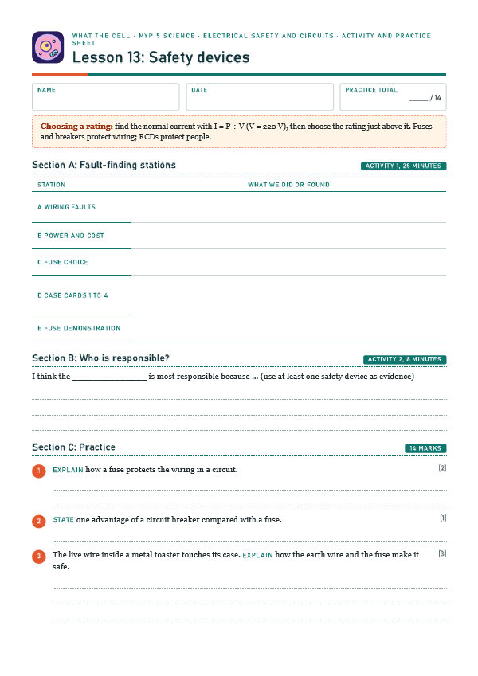

By the end of the lesson you can
- Explain how a fuse, a circuit breaker, an earth wire, double insulation and an RCD work
- State what each one protects against
- Choose a fuse or breaker rating using I = P / V
- Discuss who is responsible for electrical safety
Keys: arrows or a presentation clicker move the slides, F for full screen. Slides with a red dot have a video or simulation.
Videos (all 5 minutes or less)
- 3:02
What is an electric fuse?
Sri Chaitanya Academy. How a fuse wire melts to break a circuit. Slide 5.
- 1:51
Circuit breaker basics
The Engineering Mindset. How a circuit breaker trips and why it can be reset. Slide 6.
- 3:37
How an RCD works
Electrical How To. How an RCD compares live and neutral currents and cuts the power. Slide 9.
Simulations
- Lab
Home Safety Lab: wiring faults
What the Cell. Make the live wire touch a metal case with and without an earth wire, fuse and RCD, and see who is protected.
- Lab
Home Safety Lab: make it safe
What the Cell. Six real cases from homes like yours: choose the best fix.
- Lab
Circuit Practicals Lab: fuse test
What the Cell. Raise the current until fuses of different ratings melt, and try a short circuit.
Print and practise

Activity and practice sheet
Used in the lesson’s activities, with practice questions. Your teacher has the answers.
Download (PDF)Lesson 13 slides
All 23 slides in one file, to read again or print. The video buttons on the slides open YouTube.
Download the slides (PDF)Revising? The Revision tab on the unit page has the unit notes and review.
Class activity pack
Everything to print for the lesson’s activities: picture cards, sorting mats, station cards with their kit lists, and the teacher’s set-up notes. Print it before class.
Download the activity pack (PDF)Notes: Safety devices
The fuse
A thin wire in the live wire that melts if the current is above its rating, breaking the circuit. It protects the wiring and appliance from overheating and fire.
The circuit breaker
An automatic switch in the live wire that trips if the current is too big. It acts faster than a fuse and can be reset. Each circuit in a home has its own breaker.
The earth wire
Joins a metal case to the ground. If the live wire touches the case, a large current flows to earth and blows the fuse or trips the breaker, so the case is never left live.
Double insulation
A plastic case and extra insulation mean no live part can be touched, so no earth wire is needed. Look for the square inside a square.
The RCD
Compares the current in the live and neutral wires. If they differ by about 30 mA, current is leaking, perhaps through a person, and it switches off in a fraction of a second. It is the device that protects people.
Choosing a rating
Work out the normal current with I = P / V, then choose the rating just above it. A 2000 W kettle on 220 V takes 9.1 A, so it needs 10 A. Too big a rating lets cables overheat.
Key words
| fuse | a thin wire that melts if the current is above its rating |
|---|---|
| circuit breaker | an automatic switch that trips if the current is too big; can be reset |
| rating | the current a fuse or breaker is designed to carry before it acts |
| earth wire | gives fault current a safe path to the ground |
| double insulation | a plastic case and extra insulation, so no earth is needed |
| RCD | trips if live and neutral currents differ by about 30 mA; protects people |
| short circuit | a path with almost no resistance; a very large current flows |